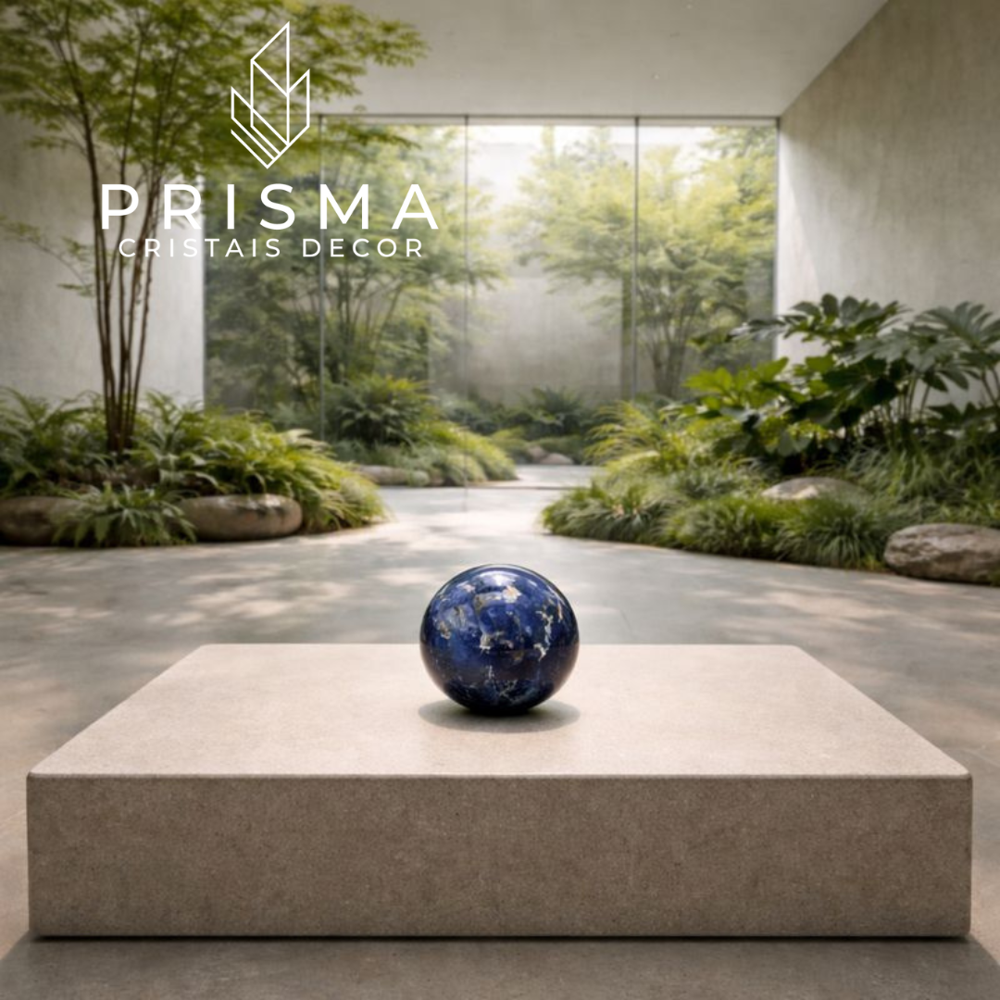
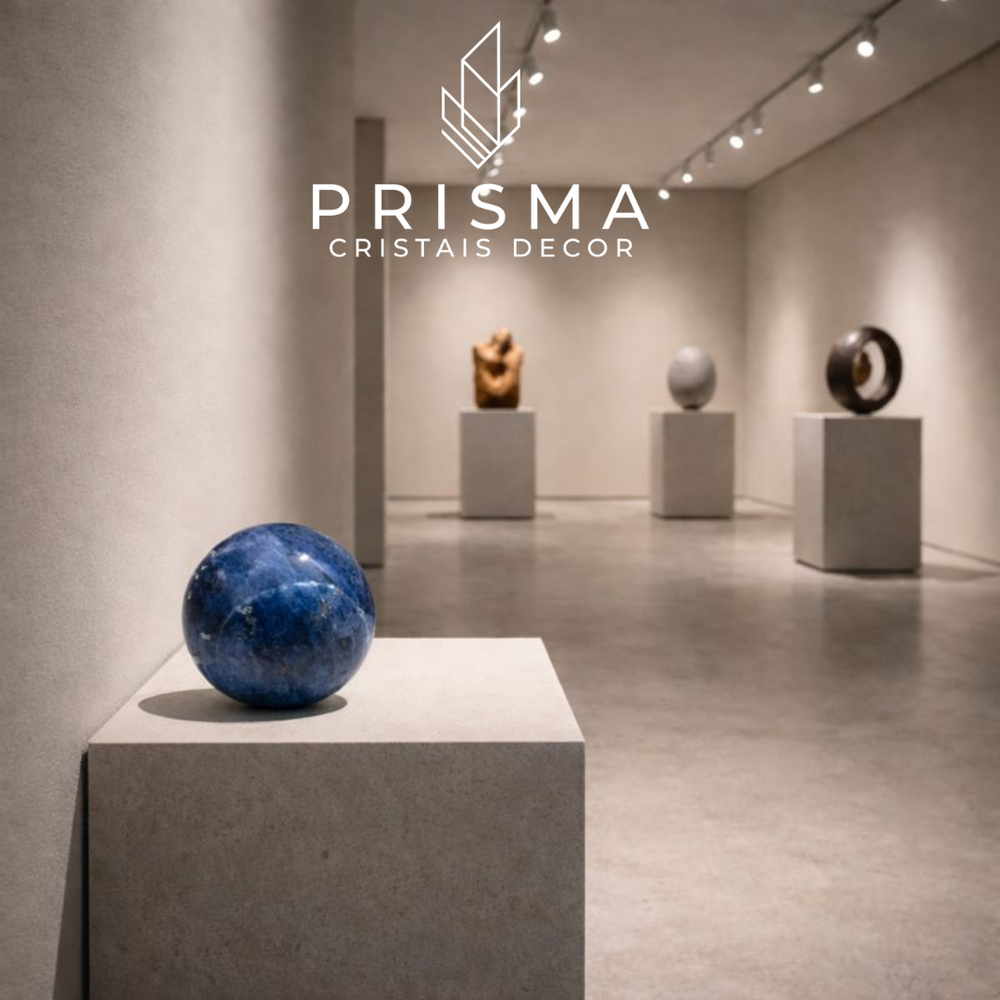
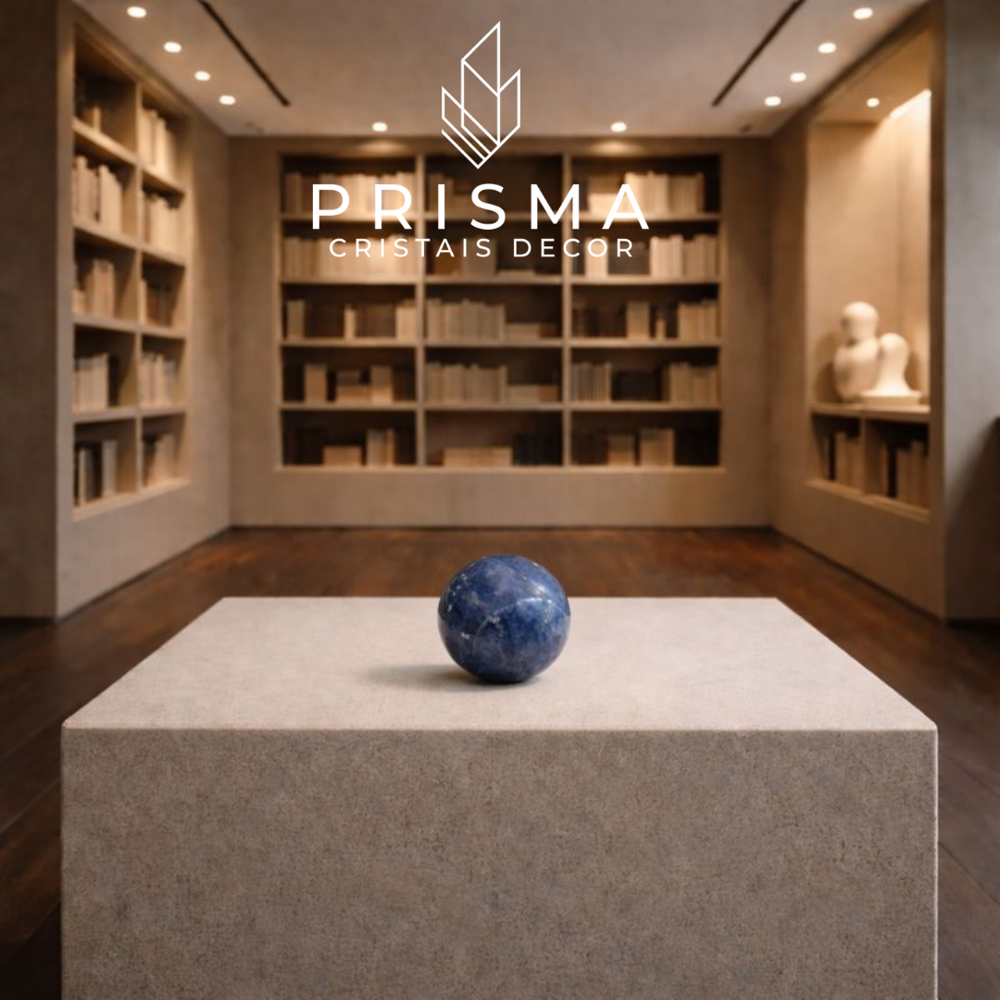

A Esfera de Sodalita representa a convergência perfeita entre raridade geológica, simbologia sagrada e elegância premium. Conhecida como "Azul Princesa" desde que encantou a realeza europeia no início do século XX, esta gema extraordinária carrega 700 milhões de anos de história em sua coloração azul-royal hipnotizante. Mais do que um objeto decorativo — é um instrumento de contemplação espiritual e uma declaração de refinamento pessoal.
Neste artigo, você vai descobrir a fascinante história da sodalita e seu patronato real, entender por que a forma esférica amplifica suas propriedades energéticas, conhecer suas aplicações na decoração contemporânea de alto padrão, e compreender por que esta peça representa um investimento em exclusividade genuína.
A Raridade Geológica da Sodalita
A sodalita é um mineral extraordinariamente raro, com composição mineralógica Na₈Al₆Si₆O₂₄Cl₂ — um silicato de sódio, alumínio e cloro que representa uma das maiores expressões de exclusividade natural na joalharia e decoração de interiores de luxo. Seu nome etimológico provém do grego antigo: "soda" (sal) + "lita" (pedra), conferindo-lhe a designação de "pedra de sal".
Formação de 700 Milhões de Anos
A formação da sodalita ocorre sob condições geológicas extraordinariamente controladas, cristalizando-se em magmas ricos em sódio e alumínio onde o resfriamento lento da crosta terrestre produz corpos minerais de até centenas de metros. Porém, estes depósitos estão distribuídos em regiões geograficamente muito restritas ao redor do mundo.
Esta restrição geológica fundamental — formada há aproximadamente 700 milhões de anos nas profundezas do oceano — transforma cada exemplar em testemunho de um processo geológico extraordinário. A sodalita apresenta tipicamente coloração azul-royal com frequentes veios de feldspato branco que criam padrões únicos e irrepetíveis em cada peça.
Características Mineralógicas
Com dureza de 5,5 a 6 na escala de Mohs, a sodalita posiciona-se como mineral relativamente delicado, exigindo lapidação e tratamento especializado que preservem sua integridade estrutural enquanto revelam suas propriedades ópticas características. Cada esfera lapidada é resultado de horas de trabalho artesanal cuidadoso.
O Azul Princesa: História de Patronato Real
A trajetória histórica da sodalita ilustra magistralmente como raridade geológica se transforma em narrativa de prestígio cultural. Embora descrita cientificamente em 1806 na Groenlândia, a sodalita permaneceu mineralogicamente obscura até 1891, quando vastíssimos depósitos de qualidade excepcionalmente elevada foram descobertos em Ontário, Canadá.
O Encantamento da Realeza Britânica
O momento decisivo na história da sodalita foi a visita de Mary de Teck, rainha consorte do Reino Unido como esposa de George V, ao Canadá. A rainha "caiu no feitiço" da sodalita azul e requisitou sua importação para o Reino Unido, utilizando extensivamente o mineral para decorar seus apartamentos na Marlborough House em Londres.
Posteriormente, a Princesa Patrícia de Connaught visitou as minas canadenses e, igualmente encantada, escolheu a sodalita para decorar sua residência londrina. Esta dupla adoção real consolidou a associação permanente da sodalita com patronato aristocrático.
O Legado do Nome "Azul Princesa"
A denominação "Azul Princesa" persiste até hoje, cristalizando uma narrativa de aproximadamente 130 anos de associação com poder, elegância e refinamento real. Este fenômeno não é meramente histórico: é um mecanismo de valorização que transformou a sodalita de mineral geológico em ícone de exclusividade.
Como resultado direto da demanda europeia, a escassez de material de qualidade levou ao surgimento de sodalitas sintéticas nos anos 1970 — uma evidência material de que a autenticidade geológica se transformou em ativo econômico diferenciado. Possuir uma sodalita genuína é possuir um fragmento dessa história de realeza.
A Geometria Sagrada da Esfera
A forma esférica não é meramente acidental em artefatos decorativos de cristal; ela carrega significado cosmológico profundo enraizado em tradições de geometria sagrada que atravessam culturas egípcias, gregas, cristãs e vedantas.
Perfeição Matemática e Metafísica
A esfera é, geometricamente falando, a forma perfeita. Cada ponto em sua superfície está equidistante do centro, criando uma simetria absoluta impossível de encontrar em qualquer outra forma tridimensional. O círculo e a esfera representam universalmente os conceitos primordiais de completude, perfeição e eternidade.
Na geometria sagrada, a esfera é compreendida como o "invólucro fundamental" para a energia e consciência, manifestando-se na natureza desde a estrutura das células até a formação de planetas. Platão, em sua cosmologia, identificava o dodecaedro como representante do universo como totalidade — a "alma do mundo".
Distribuição Uniforme de Energia
Diferentemente de cristais pontiagudos, que direcionam energia em vetores específicos, a esfera emite energia de forma uniforme em todas as direções. Esta característica a torna ideal para harmonizar campos energéticos, promovendo equilíbrio em espaços onde múltiplos indivíduos coexistem.
Uma esfera de sodalita, portanto, não é meramente um objeto lapidado: é uma manifestação material de conceitos cosmológicos que transcendem a decoração, transformando-se em instrumento de contemplação espiritual.
Propriedades Energéticas da Sodalita
Na tradição da litoterapia — a prática de utilizar cristais para equilíbrio energético — a sodalita ocupa posição de destaque como a "pedra da intuição, sabedoria e verdade". Sua ressonância energética é multifatorial e reconhecida há milênios.
Dimensão Mental e Cognitiva
A sodalita estimula clareza mental, melhora a capacidade de aprendizado e amplia a concentração. Suas propriedades incluem ativação do pensamento lógico, facilitação de inspiração artística, e fortalecimento da determinação pessoal.
Os gregos antigos associavam especificamente a sodalita ao desenvolvimento de pintores, escultores e cantores, que a mantinham como talismã para estimular inclinação artística. Esta associação milenar com as artes confere à sodalita um status especial entre os cristais.
Dimensão Emocional
A sodalita é reconhecida por reduzir ansiedade, acalmar o sistema nervoso e proporcionar equilíbrio emocional. Ameniza obsessões verbais, mitiga sintomas depressivos e auxilia na dissolução de traumas emocionais.
Dimensão Espiritual
A sodalita é comumente associada ao chakra da garganta (comunicação autêntica) e ao terceiro olho (percepção intuitiva). Facilita meditação profunda, abre o acesso ao subconsciente, aumenta intuição e fortalece a conexão com o Eu Superior.
Amplificação pela Forma Esférica
Para indivíduos que buscam integrar prática espiritual com decoração ambiental, uma esfera de sodalita atua simultaneamente como objeto focal meditativo e elemento de purificação energética. A forma esférica particularmente amplifica este efeito: esferas de cristal "irradiam energia de forma uniforme, promovendo equilíbrio e harmonia" em todo o ambiente.
Contextos Artísticos e Decorativos
A esfera de sodalita, quando lapidada em formato decorativo, transcende a categorização simples de "objeto de decoração". Ela é uma peça escultural que materializa sofisticação e design contemporâneo.
Ambientes Corporativos
Em escritórios, halls executivos e salas de reunião, a esfera de sodalita comunica sofisticação e atenção ao detalhe. Sua presença silenciosa sugere um ambiente onde decisões são tomadas com clareza e precisão.
Residências de Luxo
Em mesas de centro, estantes, aparadores e nichos decorativos, a esfera de sodalita serve como declaração de gosto e acesso a raridades. Sua coloração azul-royal complementa tanto ambientes clássicos quanto contemporâneos.
Espaços de Contemplação
Em consultórios de terapeutas, estúdios de meditação e ambientes de bem-estar, a esfera funciona como ponto focal prático para práticas contemplativas, unindo função estética e espiritual.
Interação com a Luz
O acabamento translúcido e polido de uma esfera de sodalita interage dinamicamente com iluminação ambiente: sob luz natural, revela as complexidades cromáticas do mineral azul-royal com seus veios brancos; sob iluminação de acentuação, torna-se elemento de luminescência que cria profundidade visual e interesse compositivo.
O Mercado de Colecionismo
O mercado internacional de cristais e minerais especializados opera conforme dinâmica fundamental: quanto maior a raridade, mais estratificado é o seu valor. A sodalita ocupa categoria particular nesta hierarquia.
Exemplares de Alto Valor
Cristais de sodalita completamente transparentes com forma dodecaédrica definida, encontrados raramente na Namíbia e nas lavas vulcânicas do Vesúvio (Itália), são altamente valorizados pelos colecionadores. Estes são raríssimos e comandam prêmios substanciais.
Variedades Especiais
A Hackmanite (uma variedade luminescente de sodalita encontrada em Mont-Saint-Hilaire, Canadá e Groenlândia) e a Sodalita Camaleão verde (exclusiva da Groenlândia) representam nichos micro-colecionáveis com demanda globalizada.
Apreciação de Valor
O mercado secundário de cristais raros funciona conforme princípios comparáveis ao de arte plástica: edições limitadas, autenticidade de proveniência, condição de preservação e exclusividade de acesso criam multiplicadores de valor. Uma esfera de sodalita de qualidade excepcional pode apreciar significativamente em valor ao longo do tempo — não por especulação, mas por redução contínua de disponibilidade global.
Proposição de Valor Multidimensional
Uma esfera de sodalita genuína, particularmente quando lapidada em diâmetros significativos com polimento especializado, representa uma convergência única de múltiplas dimensões de valor:
- Dimensão Geológica: Formação controlada há 700 milhões de anos em depósitos globalmente restritos — cada exemplar é expressão singular de processo natural raro
- Dimensão Histórica: Associação contínua de 130 anos com patronato real europeu ("Azul Princesa") — narrativa de prestígio acumulado e legitimidade cultural
- Dimensão Cosmológica: Forma esférica que materializa geometria sagrada primordial — instrumento de contemplação espiritual e meditação
- Dimensão Energética: Propriedades litoterapêuticas para intuição, clareza e proteção espiritual — integração de bem-estar holístico com decoração ambiental
- Dimensão Artística: Objeto escultural que interage dinamicamente com luz — elemento de elevação visual e sofisticação de interiores
- Dimensão Financeira: Raridade documentada com potencial de apreciação contínua no mercado de colecionismo
Especificações Técnicas
A esfera de sodalita apresenta características geológicas específicas que atestam sua autenticidade e qualidade:
- Composição: Na₈Al₆Si₆O₂₄Cl₂ (silicato de sódio, alumínio e cloro)
- Dureza: 5,5 a 6 na escala de Mohs
- Idade Geológica: Aproximadamente 700 milhões de anos
- Cores Naturais: Azul-royal com veios de feldspato branco
- Sistema Cristalino: Cúbico
- Durabilidade: Indefinida com cuidados apropriados
Cuidados e Preservação
Para preservar a beleza da sua Esfera de Sodalita por gerações, alguns cuidados são essenciais:
Ambiente
- Temperatura: Manter entre 15-30°C
- Umidade: Ideal entre 40-60%
- Luz: Luz natural é desejável, mas evite exposição solar direta prolongada que pode afetar a coloração ao longo de décadas
Limpeza
- Use pano macio levemente umedecido com água destilada
- Nunca utilize produtos químicos ou detergentes
- Seque completamente após a limpeza
Manuseio
- Segure com ambas as mãos para evitar quedas
- Posicione em superfícies estáveis, preferencialmente com base de apoio
- Evite choques térmicos bruscos
Conclusão
A Esfera de Sodalita não é simplesmente um acessório decorativo. É uma manifestação material de aspiração humana por beleza rara, profundidade espiritual e sofisticação estética integrada.
Para o colecionador, ela representa exclusividade geológica documentada. Para o praticante espiritual, oferece instrumento de meditação e elevação energética. Para o apreciador de design, constitui peça de arte que transforma ambientes através de interação dinâmica com luz.
Sua narrativa — de raridade subterrânea a favoritismo real, de geometria sagrada antiga a contemporânea decoração de luxo — posiciona a esfera de sodalita como objeto que transcende categorização simplista, consolidando-se como símbolo tangível de refinamento pessoal, consciência espiritual e acesso a raridades que poucos terão o privilégio de possuir.
A Esfera de Sodalita sussurra cada dia: "Aqui está o Azul Princesa. Aqui está história. Aqui está energia em todas as direções. Aqui está intuição. Aqui está elevação."